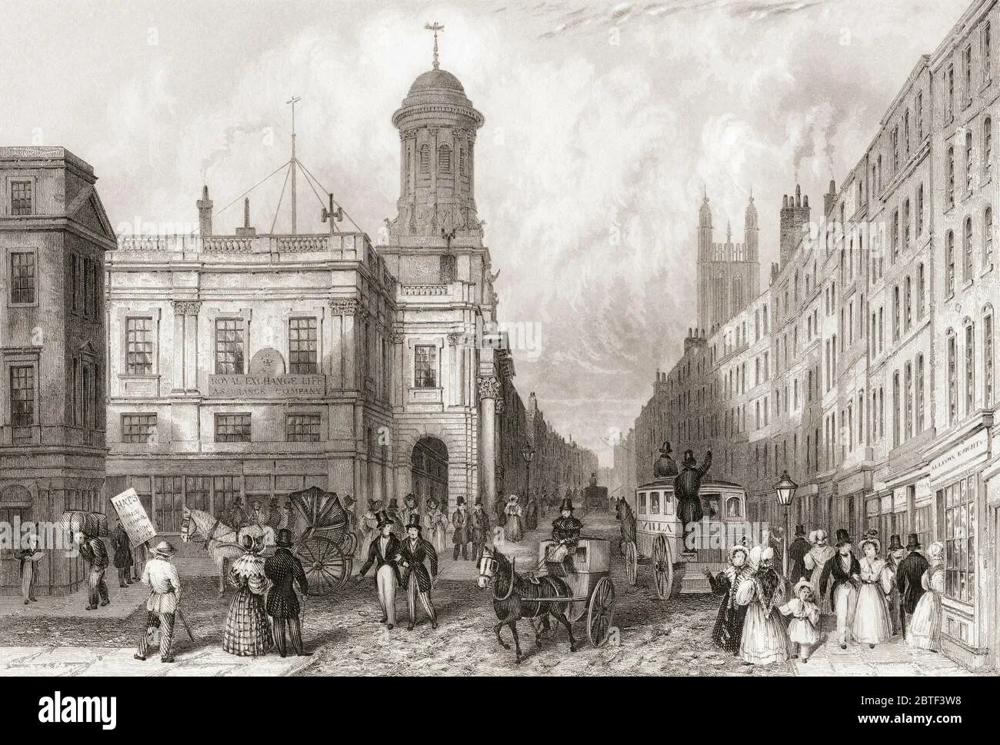
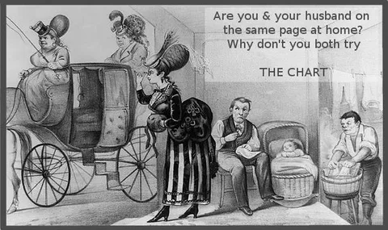

Новые публикации и издания

В Лондоне закончилось строительство системы канализационных коллекторов.
Северная и Южная системы отводных коллекторов были возведены по проекту инженера Джозефа Базэлджета,
который также спроектировал и построил набережные Виктории, Челси и Альберта.

Английская карикатура не только смешила и развлекала.
Она была то едка, то добродушна, то восторженна, то цинична, но всегда — остроумна.

За это время Лондон значительно вырос и превратился в город мирового значения,
став в 1825 году крупнейшим городом мира, крупнейшим в мире портом и сердцем международных финансов и торговли.
Были построены железные дороги, соединяющие Лондон с остальной Великобританией,
а также лондонское метро, дороги, современная канализационная система и многие известные достопримечательности.
С 1801 по 1897 год население Лондона резко возросло с 1 миллиона до 6,292 миллиона человек,
в то время как город увеличился в размерах со 122 квадратных миль в 1851 году до 693 квадратных миль к 1896 году.